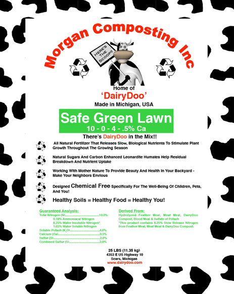

Call 616-335-0797 or email info@conversionlawncare.com for a free estimate.
Are you a good candidate for organic lawn care? Take the survey and find out!
Conversion Lawn Care uses Morgan’s Composting organic fertilizer for lawns, called Safe Green Lawn.
The lawn is one of the fastest emerging landscapes in our nation, covering a total area greater than the state of Iowa. The interpretation of what we deem a lawn goes beyond a kind of cultural inheritance. The platonic lawn is predominantly a construction of a political economy, an industry that creates demand more than it meets demand. This is a part of a complex explanation for how we have arrived at a place where our society’s most educated, those most aware of the dangers of chemical lawn care, are nevertheless statistically the most likely to use these chemicals. Lawn chemical users apply far higher quantities of chemical inputs into their lawns than agricultural chemical users. The application of these chemicals carries with it environmental consequences. Furthermore, the highly consumptive petroleum-fueled equipment emits massive amounts of air pollutants. According to the Union of Concerned Scientists, one gas mower running for an hour emits the same amount of pollutants as eight new cars driving 55 mph for the same amount of time!
In accordance with our belief that we are creatures designed and commanded by our Creator to tend to and nurture creation, we believe there are both alternatives to the lawn, and alternative ways to manage the lawn that better care for creation. Conversion’s solar and B20 biodiesel-powered equipment reduces the volume of hydrocarbons and nitrogen oxides emitted into the atmosphere, and our chemical free approach enhances the biotic life of your property as opposed to killing it.
There also exists ample evidence that many of the chemical herbicides and insecticides applied to achieve the unnatural lawn impose health risks to humans and pets. There is of course a debate on this matter because millions of dollars are at stake. It is hard to know whom to trust, or what levels of toxicity are problematic. There are studies showing MCPA and DCPA, common ingredients in herbicides, interfere with reproductive capacities. Other studies suggest over the counter 2,4-D may have carcinogenic properties. Again, there is a lot of controversy over these findings. We at Conversion believe in a conservative approach. We know our health and the health of our children is of the utmost importance, so why take unnecessary risks? Where uncertainty prevails, well-documented historical precedent indicates the value of precaution (remember DDT, lead arsenate, and more recently, organophosphates).
We believe in being as transparent as possible. Please do not hesitate to ask us questions about the business. We are happy to share information regarding our approach and products, and how we arrive at our pricing. We believe in just compensation and place a high value on the laborer (see James 5:4) but we do not believe in the many ways businesses enrich themselves at the expense of the consumer or client. A brand new truck is in no way a requirement to run a landscaping or lawn care service business, so we will not inflate prices to pay for a $45,000 truck when my 2006 GMC Sierra, purchased a few years back for $6,000 is entirely reliable. (See our pricing tables here.)
Going organic doesn’t mean your yard needs to look wild and weedy.
We want to serve as an interpreter, facilitating a conversation between the client and the site. Understanding can lead to greater intimacy, lasting care, and deeper recognition of the beauty inherent to and in a particular locale. Conversion is passionate about creating spaces people enjoy and want to be in. Aesthetics matter, and we do our best to keep your lawn looking its best.
Conversion Lawn Care delivers professional services. If you are looking for high quality work with experience in organic philosophy, this is the company for you. Whether you need to create more space in your life by taking lawn upkeep off your plate, or you want the peace of mind that the lawn care service you are hiring is good for your family’s health and the environment, Conversion Lawn Care will meet your needs. We guarantee reliable and safe services that will enhance your property.
We are in the business of conversion. As a Christian, I am all about conversion spiritually and I believe some of the principles of Christian conversion cross over and apply nicely to our vision for this business. We understand conversion to go beyond a single choice, as important as that is, and to encompass a larger process by which we learn, grow and are changed. Processes never stagnate, but involve ongoing change.
In our approach to lawn care and landscaping, we want to walk alongside homeowners as educators, introducing and inspiring residents to think outside of cultural norms to become co-creators of a more beautiful world. Our idea of a beautiful world is derived from the biblical concept of shalom. Shalom is where God’s creation is interwoven in ways that promote life, peace, and flourishing. Shalom doesn’t necessitate we all exchange monocultures of gramineae for diverse landscapes constructed with native species. But the pulse of shalom will start to shift our priorities so that they better align with God’s design and perhaps critique our culture’s values.
You are not alone on this journey of becoming better stewards of the land. We at Conversion want to use our experience and passions to walk alongside you. If you are interested in alternatives to the traditional lawn, we would be happy to discuss installing an edible landscape and alternative ground covers.
Phone: 616-335-0797
E-mail: info@conversionlawncare.com
Are you a good candidate for Conversion Lawn Care Services? Take this short survey to find out.
For each statement, choose how much you agree or disagree.
You would make an excellent candidate for Conversion Lawn Care's services.
Contact us for a free estimate at 616-335-0797 or info@conversionlawncare.com!
It doesn't appear that Conversion Lawn Care's services are a good fit for your needs at this time.
Nonetheless, feel free to contact us at 616-335-0797 or info@conversionlawncare.com with any questions or comments.